Cette boutique
soutient
la Palestine
Cette boutique
soutient
la Palestine
Bienvenue sur "Lumière de la foi", votre destination en ligne dédiée à l'enrichissement spirituel à travers les trésors de l'Islam. Que vous soyez déjà familiarisé avec cette foi ou que vous découvriez les profondeurs de l'Islam pour la première fois, nous sommes ravis de vous accueillir dans notre communauté.
L'Islam est bien plus qu'une religion. C'est une voie de vie, une source de guidance, et une lumière pour l'âme en quête de sens. Fondé sur les enseignements du Coran et les traditions du Prophète Muhammad (que la paix soit sur lui), l'Islam offre un cadre complet pour vivre une vie équilibrée, juste et spirituellement épanouissante.
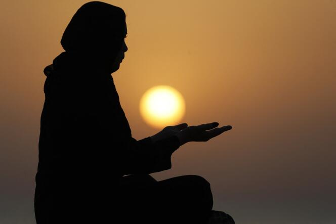
Le mot "Islam" dérive de la racine arabe "S-L-M", signifiant paix, soumission, et salut. Cela reflète la nature intrinsèque de l'Islam, appelant à la paix intérieure à travers la soumission à la volonté divine et offrant le salut éternel.
L'Islam est édifié sur cinq piliers fondamentaux :
La déclaration de foi, fondement de l'islam, réaffirme la croyance en un Dieu unique, partagée avec les chrétiens et les juifs. Les prophètes, tels que Moïse et Jésus (Musa et Isa en arabe), ont transmis cette foi, mais les musulmans considèrent que le dernier message divin, le plus universel, a été révélé au prophète Mahomet. La croyance en ce Dieu unique est ainsi la base de l'islam.
La prière, pilier essentiel de l'islam, exprime la foi par la communication directe avec Allah. Chaque musulman doit accomplir quotidiennement cinq prières en direction de la Mecque, adaptées aux contraintes individuelles. La prière du vendredi à midi, dirigée par un imam, est obligatoire. La salât, deuxième pilier de l'islam, implique cinq prières quotidiennes avec des mouvements spécifiques, comprenant la récitation de sourates, inclinaisons, et prosternations.
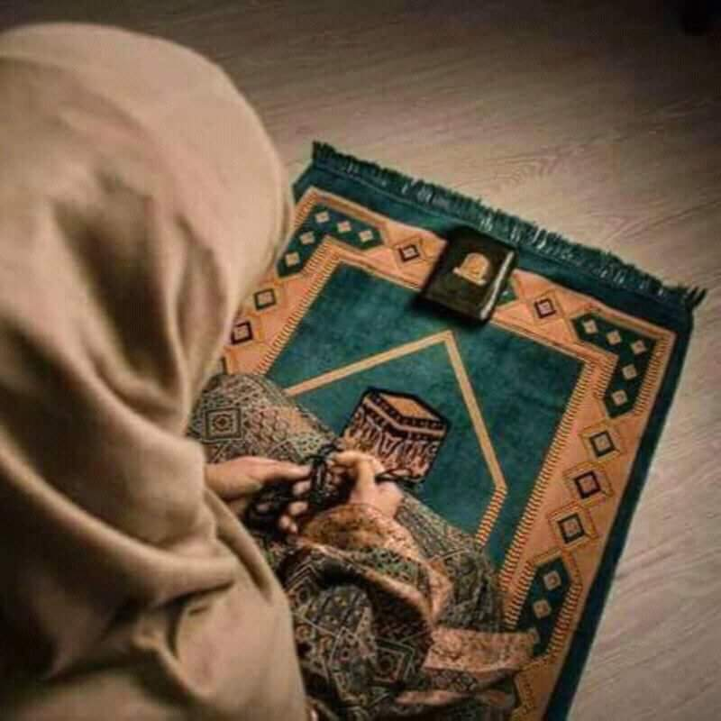
L'aumône envers les pauvres et les nécessiteux occupe une place importante dans l'islam. Parmi toutes les manières possibles de faire l'aumône, la plus formelle consiste à payer un impôt, la zakat, l'un des cinq piliers de l'islam. Le montant de la zakat que doit verser une personne est un pourcentage de sa fortune. L'impôt est ensuite réparti entre les pauvres, mais il peut également servir à aider d'autres membres de la société dans le besoin.
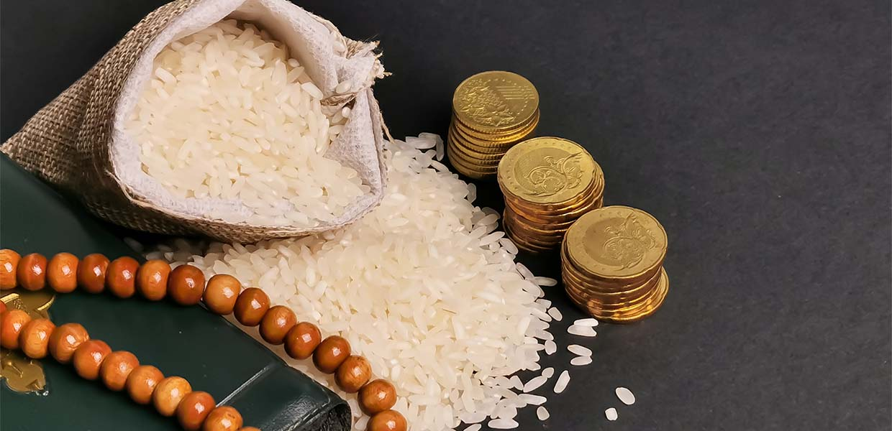
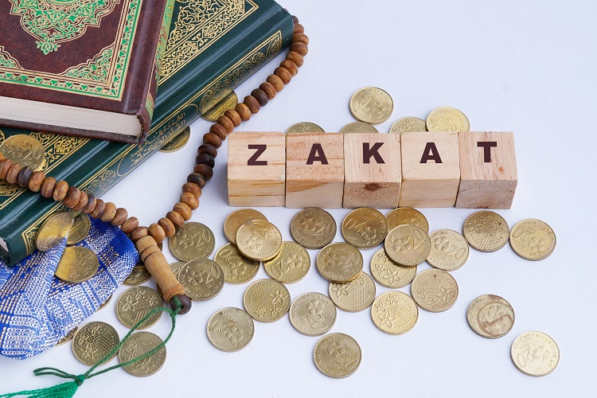
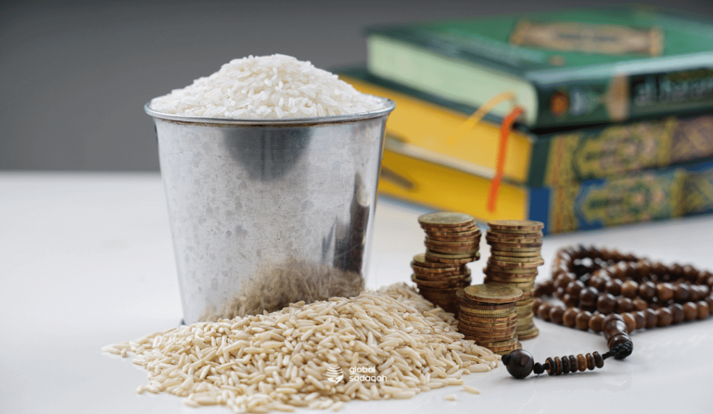
Le prophète Mahomet reçut la première révélation du Coran pendant le mois de Ramadan, le neuvième mois lunaire, conférant à ce mois une importance particulière dans l'islam. Durant chaque jour de Ramadan, les musulmans observent le jeûne, s'abstenant de manger, boire et avoir des relations sexuelles du lever au coucher du soleil. Le jeûne, considéré comme l'un des piliers de l'islam, peut être exempté pour les personnes très malades, les femmes enceintes et les jeunes enfants.
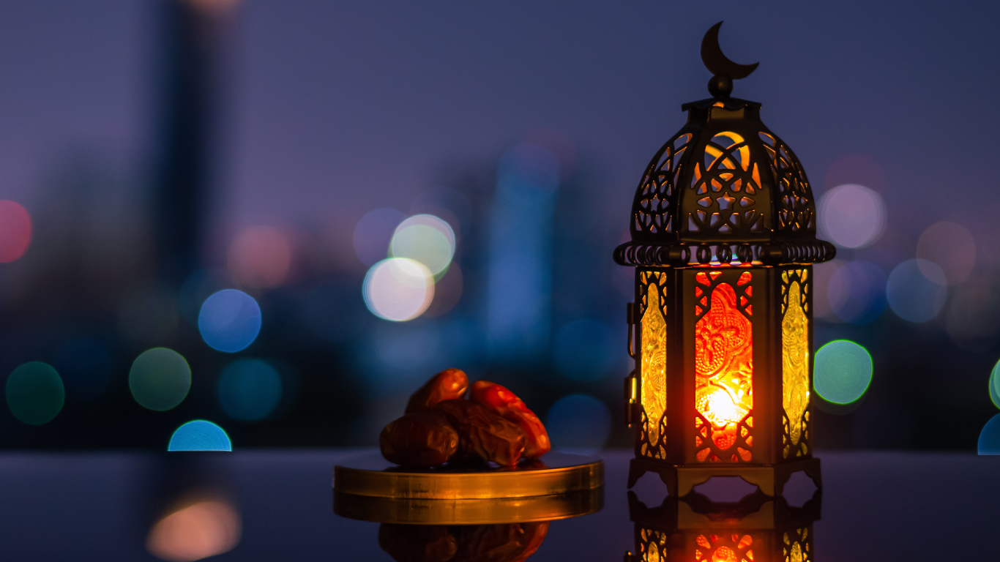
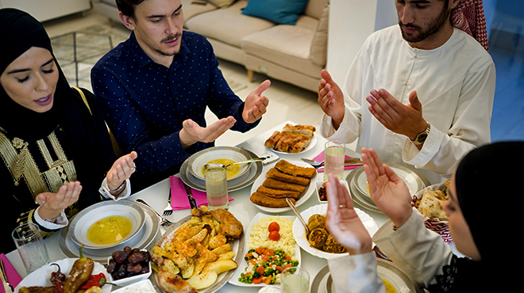
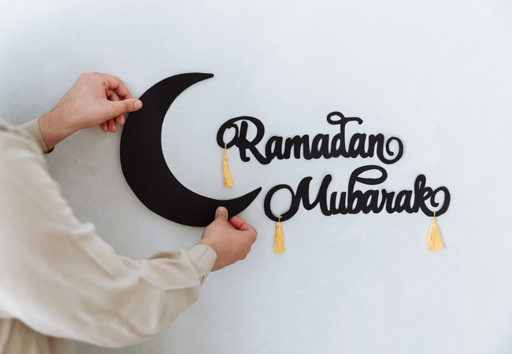
Le dernier des piliers de l'islam est le pèlerinage, le hadj. Chaque musulman aspire à l'accomplir une fois dans sa vie, si ses moyens financiers et sa santé le permettent. Le hadj implique des rites annuels à la mosquée sacrée de La Mecque et dans les régions environnantes de Mina, Muzdalifa et Arafat. Il comprend également un pèlerinage plus court à La Mecque, appelé umra, qui peut être effectué à n'importe quel moment de l'année, bien qu'il fasse partie intégrante du hadj.
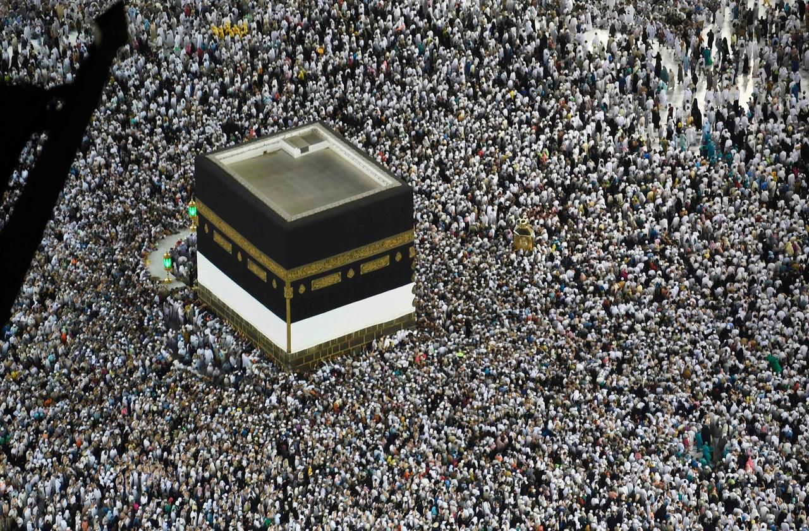
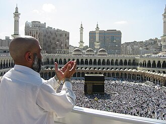
L'Islam est marqué par des moments de joie et de célébration :
La célébration de l'Aïd al-Fitr, marquant la conclusion du Ramadan, s'ouvre par une prière matinale particulière, réunissant les fidèles dans les mosquées ou en plein air. Elle est suivie de festivités joyeuses, d'échanges de présents, de repas festifs et de dons appelés Zakat al-Fitr. Cette journée spéciale, empreinte de gratitude et de solidarité, clôture de manière festive le mois de jeûne et renforce les liens au sein de la communauté musulmane.
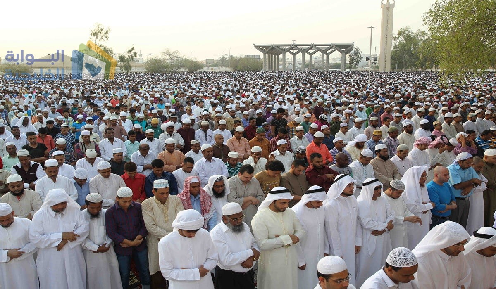
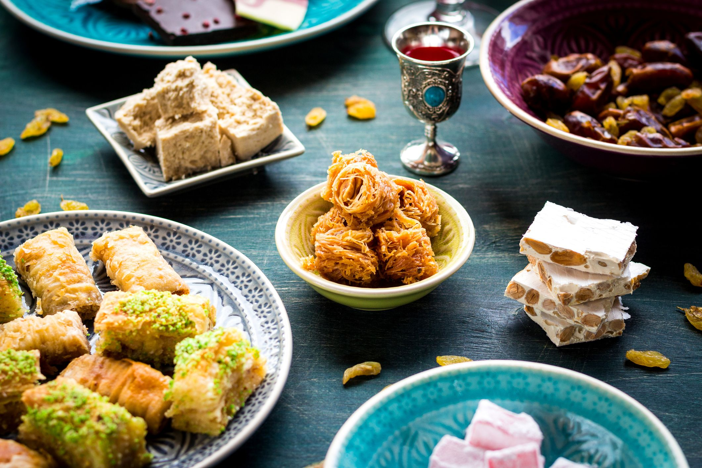
L'Aïd al-Adha commémore la volonté d'Ibrahim d'obéir à Dieu en sacrifiant son fils, remplacé par un bélier. Les familles musulmanes sacrifient un animal (mouton), partageant la viande avec leurs proches et les nécessiteux. Comme pour l'Aïd al-Fitr, la journée commence par une prière spéciale, suivie de célébrations festives, renforçant les liens familiaux et communautaires, tout en rappelant les valeurs de sacrifice et de dévotion à Dieu.
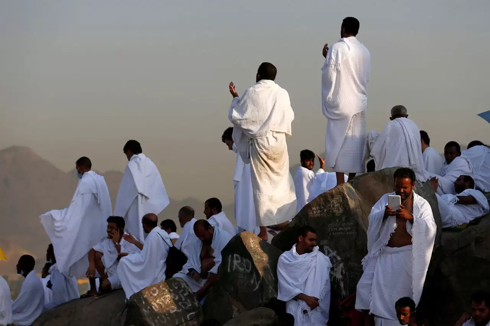
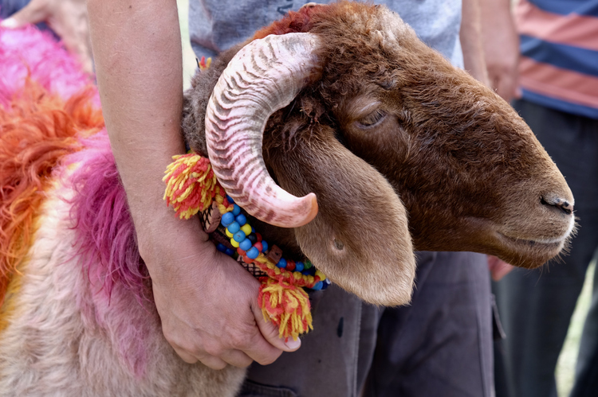
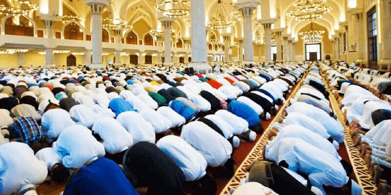
Sur "Lumière de la foi", nous avons rassemblé une sélection minutieuse de produits qui reflètent la richesse de l'Islam. Des éditions spéciales du Saint Coran aux vêtements traditionnels, des articles de bien-être spirituel aux décorations pour la maison, chaque produit est choisi avec soin pour inspirer et renforcer votre foi.
Nous espérons que votre visite ici sera une expérience éclairante et que vous trouverez des trésors qui enrichiront votre parcours spirituel. N'hésitez pas à explorer notre boutique en ligne et à rejoindre notre communauté engagée.
Que la lumière de la foi guide chacun de vos pas
Bienvenue sur "Lumière de la foi"
Cordialement,
L'équipe de Lumière de la foi